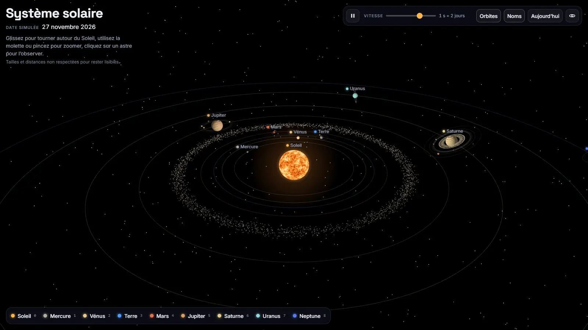

2026 · Conception et développement
Le système solaire en 3D temps réel : on tourne autour du Soleil et on suit chaque planète.

Animation 3D du système solaire avec Three.js. On clique sur un astre pour le suivre et afficher sa fiche (rotation, révolution, gravité, masse…), d’après les données de la NASA.
J’en avais réalisé une première version il y a plusieurs années, en HTML, CSS et JavaScript, pour jouer avec les effets d’animation CSS de l’époque : les ombres, la lumière du Soleil, la rotation de chaque planète.
Le but était de le refaire avec l’IA en un minimum de prompts, en gardant l’idée de départ, pour m’exercer à travailler avec elle.
Le premier résultat était plutôt satisfaisant, puis quelques idées sont venues enrichir le projet.